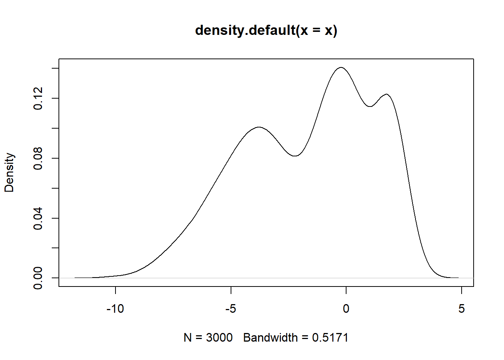

Gaussian Mixture Models
Univariate Gaussian Mixture Models
Implementation
ugmm <- function(X, K, tol=0.0001, maxit=1000) {
# Basics of X
N <- length(X)
# Initialise means
mu <- sample(X, K)
# Initialise variances
theta <- rep(var(X), K)
# Initialise mixing proportions
prop <- rep(1/K, K)
# Initialise individual label probabilities and weighted densities
g <- matrix(0, nrow=N, ncol=K)
# Initialise the difference
diff <- Inf
old <- 0
# Initialise iterations
it <- 0
# EM Algo
while (it < maxit) {
# Old values
oldmu <- mu
oldtheta <- theta
oldprop <- prop
# E-step
for (k in 1:K) {
g[,k] <- prop[k] * dnorm(X, mu[k], sqrt(theta[k]))
}
g <- g / rowSums(g)
# M-step
Nk <- colSums(g)
for (k in 1:K) {
# Calculate mu_k
mu[k] <- sum(g[,k] * X) / Nk[k]
# Calculate theta^2_k
theta[k] <- sum(g[,k]*(X - mu[k])^2) / Nk[k]
# Update mixing proportions
prop[k] <- Nk[k]/N
}
# Calculate log-likelihood
lli <- numeric(N)
for (k in 1:K) {
lli <- lli + g[,k] * (log(prop[k]) + log(dnorm(X, mu[k], sqrt(theta[k]))))
}
ll <- sum(lli)
# Recalulate difference
diff <- abs(ll - old)
# Update iterations
it <- it+1
# Check
if (diff < tol) break
# Assume the loop hasn't ended, update the old ll
old <- ll
}
return(list(it=it, mu=mu, theta=sqrt(theta), prop=prop))
}Testing the function:
# Simulate draws from 3 distributions
set.seed(1234)
x1 <- rnorm(1000, 0, 1)
x2 <- rnorm(1500, -4, 2)
x3 <- rnorm(500, 2, 0.5)
# Combine into single vector
x <- c(x1, x2, x3)
# Density Plot
plot(density(x))
# Estimate clusters
ugmm(x, 3)## $it
## [1] 231
##
## $mu
## [1] -3.9174651 1.9712504 -0.1162445
##
## $theta
## [1] 2.0231925 0.5045694 0.8715375
##
## $prop
## [1] 0.5054033 0.1863845 0.3082122